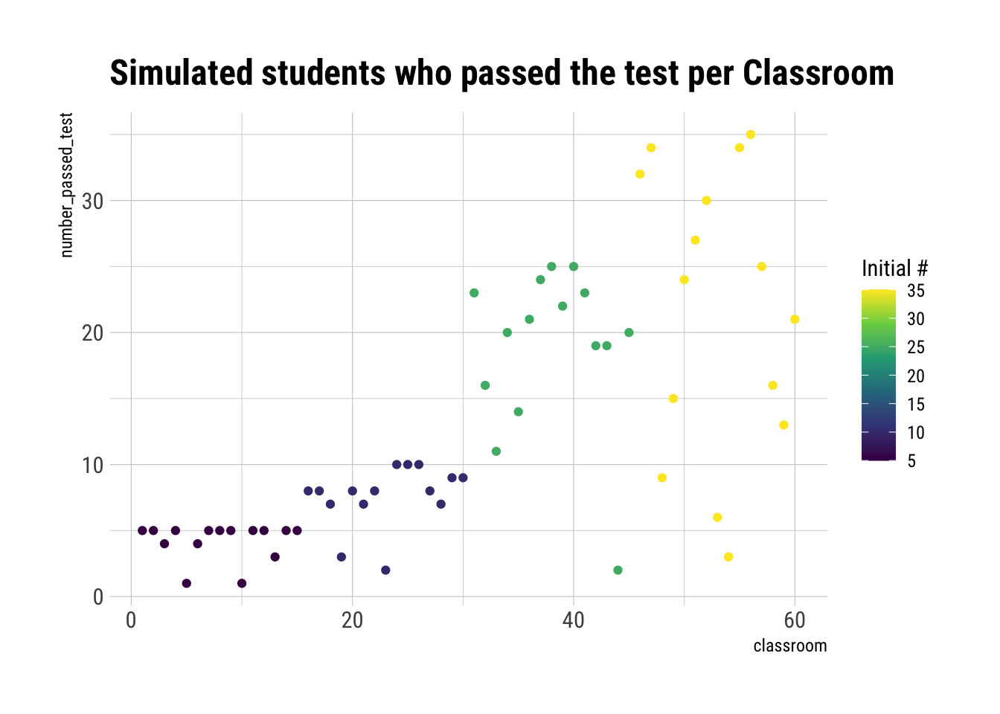
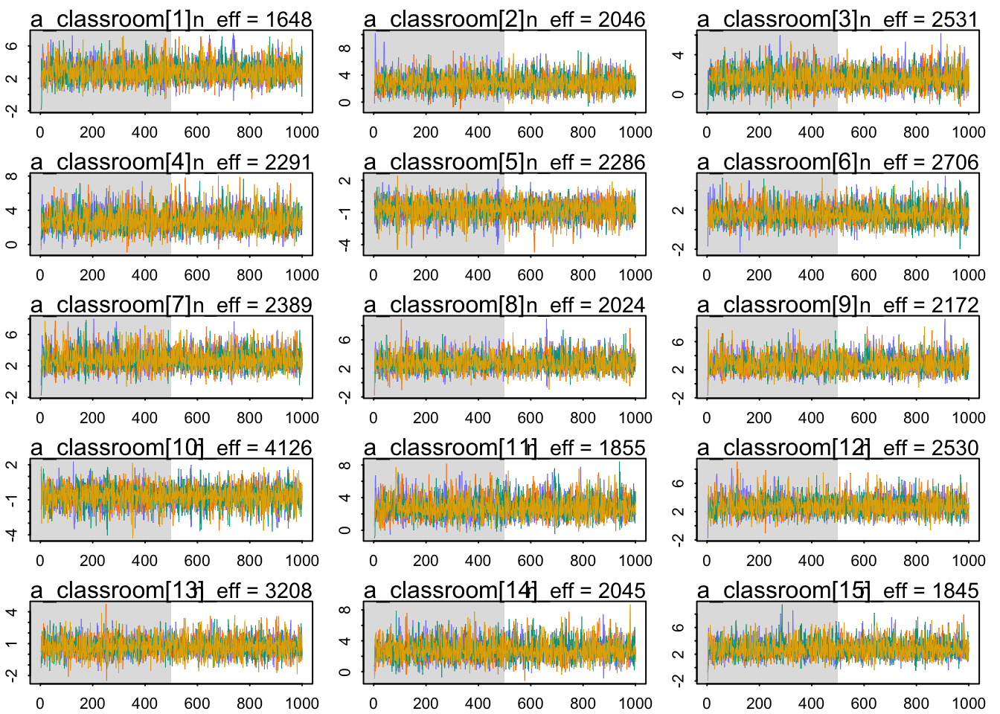
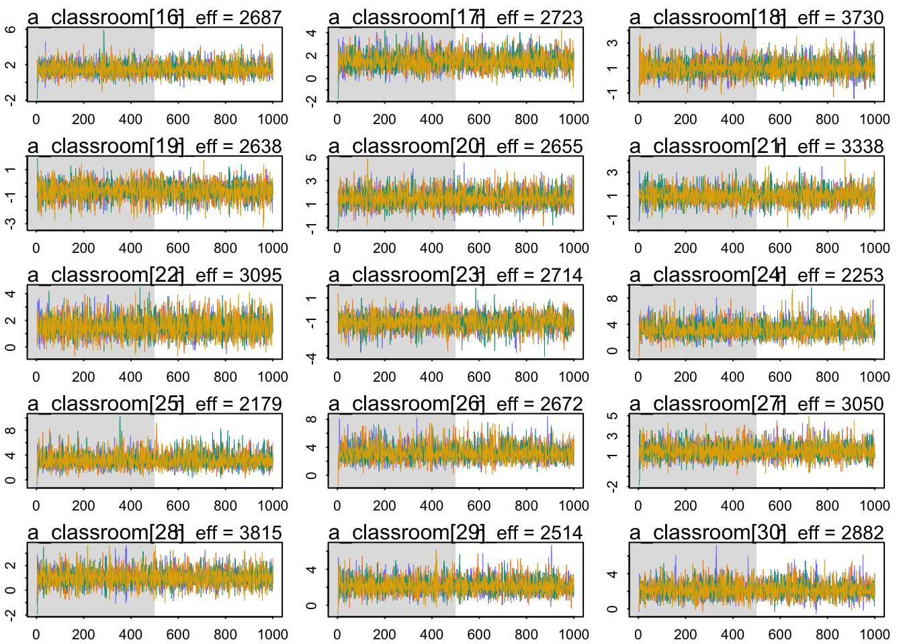
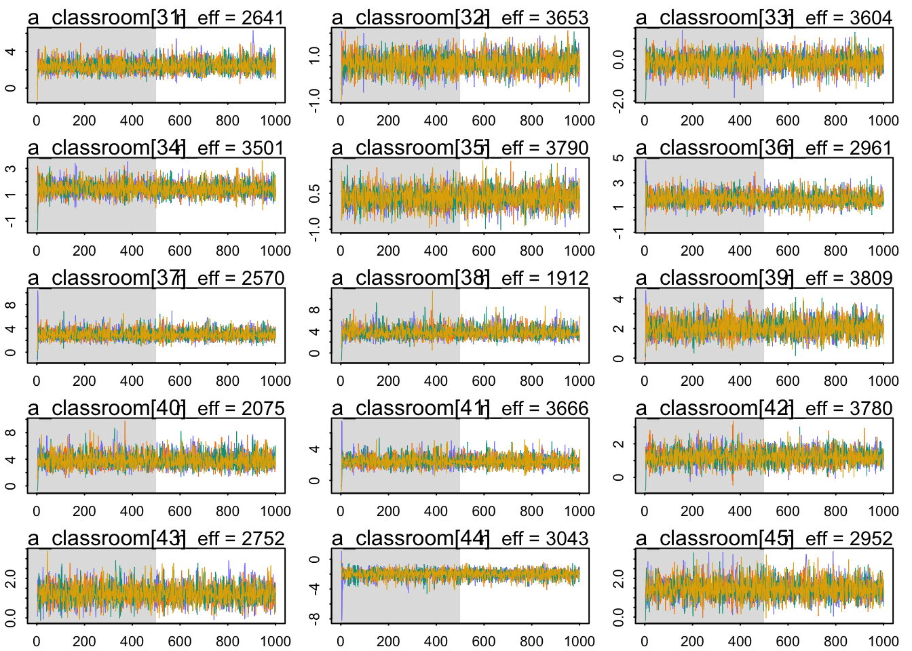
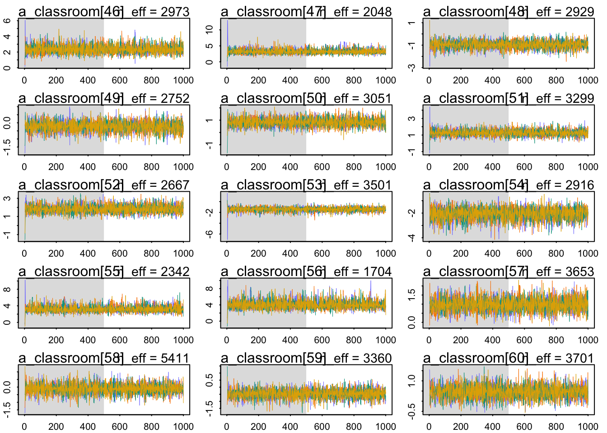
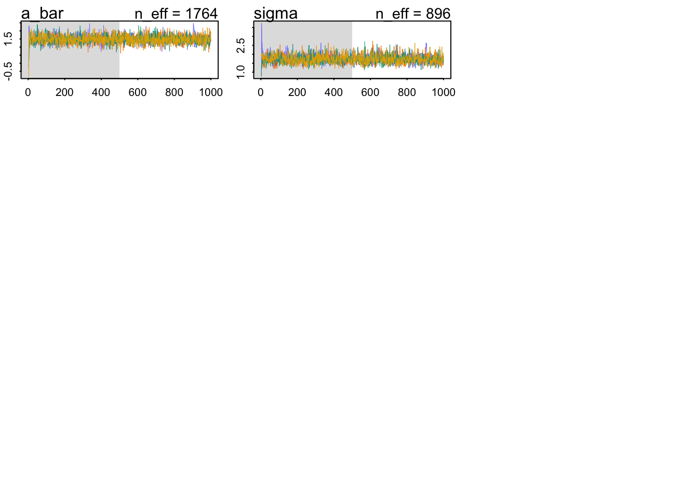
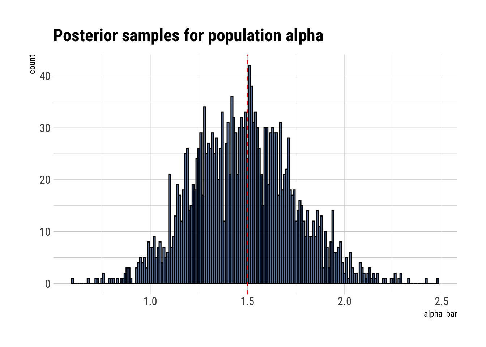
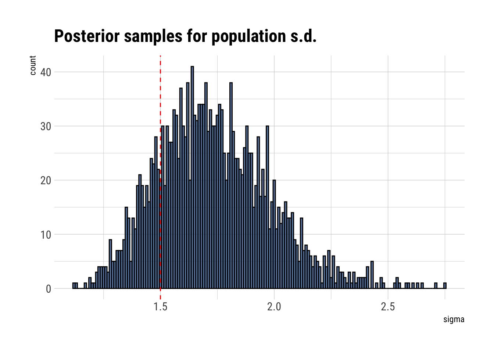
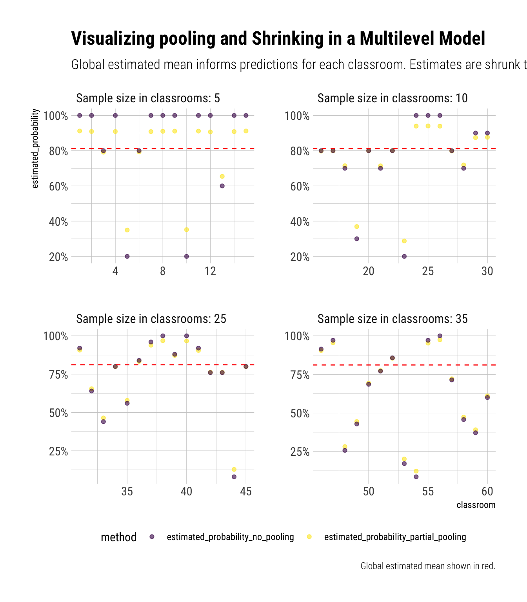
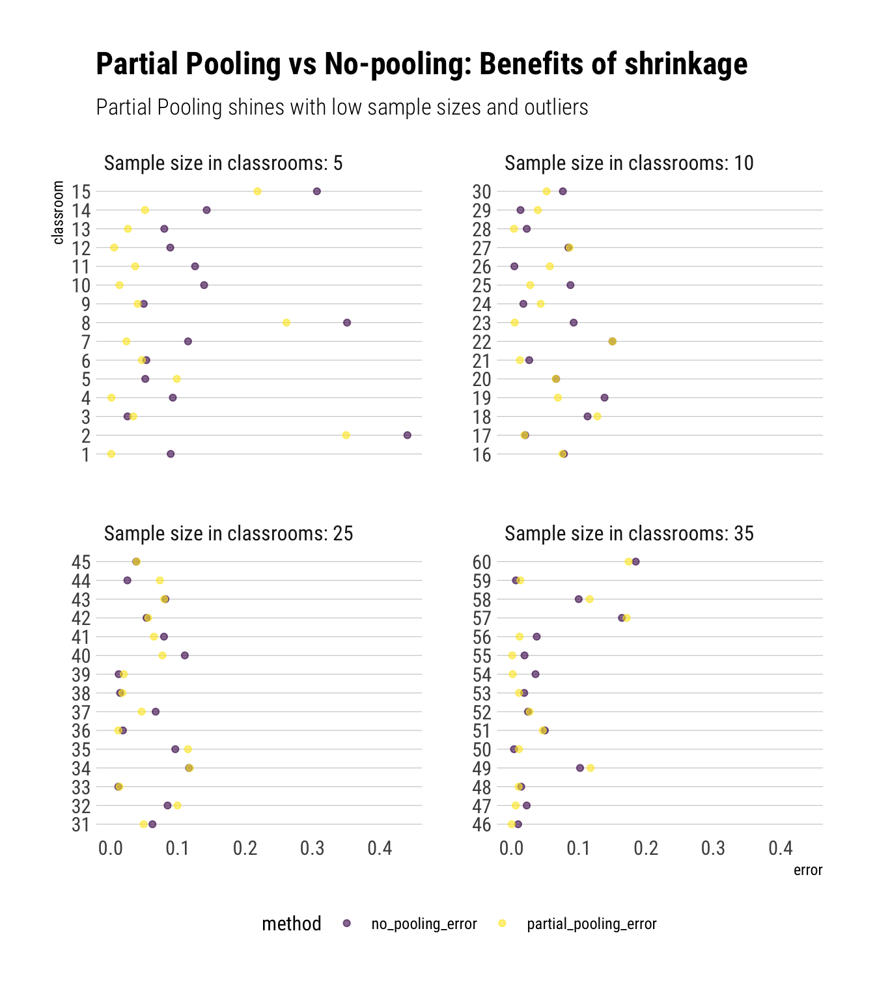

a_bar <- 1.5
sigma <- 1.5
n_classrooms <- 60
# students per classrom
Ni <- as.integer(rep(c(5, 10, 25, 35), each = 15))Simulating into Understanding Multilevel Models
Pooling is the process and shrinkning is the result
Pooling and Shrinking are not easy concepts to understand. In the lectures, Richard, as always, does an excellent job of creating metaphors and examples to help us gain intuition around what Multilevel models do. Multilevel models are models mnesic models.
Imagine a cluster of observations: it can be different classrooms in a school. Pooling means using the information from other classrooms to inform our estimates for each classroom. A model with no pooling means that each classroom is the first classroom that we have ever seen, as other classrooms have no effect on our estimates. No pooling models are amnesic models.
Finally, shrinking is the result of this pooling: our estimates for each classroom will be pulled towards the global mean across classrooms. But how do multilevel models do this?
Parameters come from a common distribution
Multilevel models propose to model a family of parameters (the parameters for each classroom) as coming from a common statistical population parameters. For example, the family of varying intercepts for each classroom in the school. Then, as we learn each parameter for each classroom, we learn simultaneously the family of the parameters for all classrooms; both processes complement each other. Therefore, this distribution of the family of parameters will become an adaptive regularizer for our estimates: they will shrink the varying intercepts for each classroom to the estimated mean of the common distribution; the amount of shrinkage will be determined by the variation that we estimate for the distribution of the family of parameters. The more influenced parameters are going to be those that come from classrooms with small sample sizes.
However, it is one thing to have some intuition and another one is to really understand something. When it comes to statistics, I am a big fan of simulation. Thankfully, Richard does precisely this in chapter 12. Let’s simulate a model to visualize both pooling and shrinking.
The Model: A multilevel binomial
We simulate the number of students who passed some exam at different classrooms at one school. That is, each classroom has \(S_i\) students who passed the test, from a maximum of \(N_i\). The model then is the following:
\[ S_i \sim Binomial(N_i, p_i) \]
\[ logit(p_i) = \alpha_{classroom_{[i]}} \]
\[ \alpha_j \sim Normal(\bar{\alpha}, \sigma)\]
\[ \bar{\alpha} \sim Normal(0, 1.5) \]
\[ \sigma \sim Exponential(1) \]
Then, we posit a distribution for the average log-odds of passing the exam for each classroom: \(\alpha_j \sim Normal(\bar{\alpha}, \sigma)\). That is, the prior for each intercept will be one distribution that we will simultaneously learn as we learn the individual parameters. Finally, we have hyper-priors: priors for the parameters of the distribution of intercepts (\(\bar{\alpha}, \sigma\)).
The simulation
To simulate this model, we will define the parameters of the distribution of intercepts. Then, for each classroom, we will simulate an average log-odds of passing the exam. Then, we will simulate the number of students at each classroom that passed the test.
Notice that neither the hyper-priors nor the priors are part of our simulation. In Richard’s words:
Priors are epistomology, not ontology.
Let’s begin by setting the parameters of the population of intercepts:
Then, we simulate the average log-odds of passing the exam for each of the classrooms
avg_lod_odds_per_classrom <- rnorm(n_classrooms, mean = a_bar, sd = sigma)Then, we have the following:
data_simulation <- data.frame(classroom = 1:n_classrooms, Ni = Ni, true_log_odds = avg_lod_odds_per_classrom)
glimpse(data_simulation)Rows: 60
Columns: 3
$ classroom <int> 1, 2, 3, 4, 5, 6, 7, 8, 9, 10, 11, 12, 13, 14, 15, 16, 1…
$ Ni <int> 5, 5, 5, 5, 5, 5, 5, 5, 5, 5, 5, 5, 5, 5, 5, 10, 10, 10,…
$ true_log_odds <dbl> 2.3245048, 0.2375944, 1.5494969, 2.2862246, -1.0914062, …Simulate the survivors
Putting the logistic into the random binomial function, we can generate the number of students who passed the test for each classrom:
Remember that the logistic is simply the inverse of the logit. Thus, by applying the logistic we go from the log-odds into the probability.
data_simulation %>%
mutate(number_passed_test = rbinom(n_classrooms, prob = logistic(true_log_odds), size = Ni)) -> data_simulation
glimpse(data_simulation)Rows: 60
Columns: 4
$ classroom <int> 1, 2, 3, 4, 5, 6, 7, 8, 9, 10, 11, 12, 13, 14, 15, …
$ Ni <int> 5, 5, 5, 5, 5, 5, 5, 5, 5, 5, 5, 5, 5, 5, 5, 10, 10…
$ true_log_odds <dbl> 2.3245048, 0.2375944, 1.5494969, 2.2862246, -1.0914…
$ number_passed_test <int> 5, 5, 4, 5, 1, 4, 5, 5, 5, 1, 5, 5, 3, 5, 5, 8, 8, …data_simulation %>%
ggplot(aes(classroom, number_passed_test, color = Ni)) +
geom_point() +
scale_color_viridis_c() +
labs(title = "Simulated students who passed the test per Classroom",
color = "Initial #")
No-pooling estimates
Pooling means using the information from other classrooms to inform our predictions of estimated probabilities of passing the exams at different classrooms. Therefore, no-pooling means treating each classroom as completely unrelated to others. That is, estimating that the variance of the population of parameters is infinite.
Therefore, our estimate of the probability of passing the test at each classroom will just be the raw sample proportion at each classrom:
data_simulation %>%
mutate(estimated_probability_no_pooling = number_passed_test / Ni) -> data_simulation
glimpse(data_simulation)Rows: 60
Columns: 5
$ classroom <int> 1, 2, 3, 4, 5, 6, 7, 8, 9, 10, 11, 12…
$ Ni <int> 5, 5, 5, 5, 5, 5, 5, 5, 5, 5, 5, 5, 5…
$ true_log_odds <dbl> 2.3245048, 0.2375944, 1.5494969, 2.28…
$ number_passed_test <int> 5, 5, 4, 5, 1, 4, 5, 5, 5, 1, 5, 5, 3…
$ estimated_probability_no_pooling <dbl> 1.0, 1.0, 0.8, 1.0, 0.2, 0.8, 1.0, 1.…Partial pooling estimates
Partial pooling means to model explicitly the population of parameters. Then, with a mean and a standard deviation estimated, we can perform adaptive regularization, i.e., shrinkage to our predictions. To do so, we will fit a multilevel binomial model:
data_model <- list(Si = data_simulation$number_passed_test, Ni = data_simulation$Ni, classroom = data_simulation$classroom)
multilevel_model <- alist(
Si ~ dbinom(Ni, p),
logit(p) <- a_classroom[classroom], # each pond get its own average log odds of survival
a_classroom[classroom] ~ dnorm(a_bar, sigma),
a_bar ~ dnorm(0, 1.5),
sigma ~ dexp(1)
)Then, we use HMC to sample from our posterior:
multilevel_fit <- ulam(multilevel_model, data = data_model, chains = 4, cores = 4)Running MCMC with 4 parallel chains, with 1 thread(s) per chain...
Chain 1 Iteration: 1 / 1000 [ 0%] (Warmup)
Chain 1 Iteration: 100 / 1000 [ 10%] (Warmup)
Chain 1 Iteration: 200 / 1000 [ 20%] (Warmup)
Chain 1 Iteration: 300 / 1000 [ 30%] (Warmup)
Chain 1 Iteration: 400 / 1000 [ 40%] (Warmup)
Chain 1 Iteration: 500 / 1000 [ 50%] (Warmup)
Chain 1 Iteration: 501 / 1000 [ 50%] (Sampling)
Chain 1 Iteration: 600 / 1000 [ 60%] (Sampling)
Chain 1 Iteration: 700 / 1000 [ 70%] (Sampling)
Chain 2 Iteration: 1 / 1000 [ 0%] (Warmup)
Chain 2 Iteration: 100 / 1000 [ 10%] (Warmup)
Chain 2 Iteration: 200 / 1000 [ 20%] (Warmup)
Chain 2 Iteration: 300 / 1000 [ 30%] (Warmup)
Chain 2 Iteration: 400 / 1000 [ 40%] (Warmup)
Chain 2 Iteration: 500 / 1000 [ 50%] (Warmup)
Chain 2 Iteration: 501 / 1000 [ 50%] (Sampling)
Chain 2 Iteration: 600 / 1000 [ 60%] (Sampling)
Chain 2 Iteration: 700 / 1000 [ 70%] (Sampling)
Chain 2 Iteration: 800 / 1000 [ 80%] (Sampling)
Chain 2 Iteration: 900 / 1000 [ 90%] (Sampling)
Chain 3 Iteration: 1 / 1000 [ 0%] (Warmup)
Chain 3 Iteration: 100 / 1000 [ 10%] (Warmup)
Chain 3 Iteration: 200 / 1000 [ 20%] (Warmup)
Chain 3 Iteration: 300 / 1000 [ 30%] (Warmup)
Chain 3 Iteration: 400 / 1000 [ 40%] (Warmup)
Chain 3 Iteration: 500 / 1000 [ 50%] (Warmup)
Chain 3 Iteration: 501 / 1000 [ 50%] (Sampling)
Chain 3 Iteration: 600 / 1000 [ 60%] (Sampling)
Chain 3 Iteration: 700 / 1000 [ 70%] (Sampling)
Chain 3 Iteration: 800 / 1000 [ 80%] (Sampling)
Chain 3 Iteration: 900 / 1000 [ 90%] (Sampling)
Chain 3 Iteration: 1000 / 1000 [100%] (Sampling)
Chain 4 Iteration: 1 / 1000 [ 0%] (Warmup)
Chain 4 Iteration: 100 / 1000 [ 10%] (Warmup)
Chain 4 Iteration: 200 / 1000 [ 20%] (Warmup)
Chain 4 Iteration: 300 / 1000 [ 30%] (Warmup)
Chain 4 Iteration: 400 / 1000 [ 40%] (Warmup)
Chain 4 Iteration: 500 / 1000 [ 50%] (Warmup)
Chain 4 Iteration: 501 / 1000 [ 50%] (Sampling)
Chain 4 Iteration: 600 / 1000 [ 60%] (Sampling)
Chain 4 Iteration: 700 / 1000 [ 70%] (Sampling)
Chain 4 Iteration: 800 / 1000 [ 80%] (Sampling)
Chain 4 Iteration: 900 / 1000 [ 90%] (Sampling)
Chain 4 Iteration: 1000 / 1000 [100%] (Sampling)
Chain 1 Iteration: 800 / 1000 [ 80%] (Sampling)
Chain 1 Iteration: 900 / 1000 [ 90%] (Sampling)
Chain 1 Iteration: 1000 / 1000 [100%] (Sampling)
Chain 1 finished in 0.2 seconds.
Chain 2 Iteration: 1000 / 1000 [100%] (Sampling)
Chain 2 finished in 0.2 seconds.
Chain 3 finished in 0.2 seconds.
Chain 4 finished in 0.2 seconds.
All 4 chains finished successfully.
Mean chain execution time: 0.2 seconds.
Total execution time: 0.3 seconds.Let’s evaluate the validity of our Markov Chains:
traceplot_ulam(multilevel_fit)




The chains look healthy because:
- They have good mixing across the parameter space.
- They are stationary.
- Different chains converge to explore the same spaces.
Now, let’s find out our estimated parameters:
precis(multilevel_fit, depth = 2) %>%
data.frame() %>%
select(Rhat4) %>%
summary() Rhat4
Min. :0.9982
1st Qu.:0.9988
Median :0.9993
Mean :0.9995
3rd Qu.:0.9998
Max. :1.0021 The Rhat values look OK. That is, it seems that we sampled correctly from our posterior. Let’s use these samples from the posterior distribution to calculate our estimated log-odds of survival for each pond.
posterior_samples <- extract.samples(multilevel_fit)
glimpse(posterior_samples)List of 3
$ a_classroom: num [1:2000, 1:60] 2.93 2.06 3.09 5.13 1.17 ...
$ a_bar : num [1:2000(1d)] 1.48 1.24 1.72 1.49 1.11 ...
$ sigma : num [1:2000(1d)] 1.62 1.8 1.42 2.04 1.45 ...
- attr(*, "source")= chr "ulam posterior: 2000 samples from object"Before we calculate our estimated log-odds, let’s check our estimates for the population of parameters from which each intercept comes:
data.frame(alpha_bar = posterior_samples$a_bar) %>%
ggplot(aes(alpha_bar)) +
geom_histogram(binwidth = 0.01, color = "black", fill = "dodgerblue4", alpha = 0.7) +
geom_vline(aes(xintercept = 1.5), linetype = 2, color = "red") +
labs(title = "Posterior samples for population alpha")
It seems that we’ve correctly caputred the mean of the population. Let’s check the standard deviation of the distribution:
data.frame(sigma = posterior_samples$sigma) %>%
ggplot(aes(sigma)) +
geom_histogram(binwidth = 0.01, color = "black", fill = "dodgerblue4", alpha = 0.7) +
geom_vline(aes(xintercept = 1.5), linetype = 2, color = "red") +
labs(title = "Posterior samples for population s.d.")
Our estimates for the variation in the population could be better. Nevertheless, let’s check our estimated probability of survival for each pond:
logistic_own <- function(var) {
1/(1+exp(-var))
}
matrix_estimated_probs <- logistic_own(posterior_samples$a_classroom)
glimpse(matrix_estimated_probs) num [1:2000, 1:60] 0.949 0.886 0.956 0.994 0.763 ...We have a matrix of 2000 rows (2000 simulations) and 60 columns (60 different ponds). Let’s take the average across samples. This will be our estimated probability for each classroom:
partial_pooling_estimates <- apply(matrix_estimated_probs, 2, mean)
data.frame(estimated_probability_partial_pooling = partial_pooling_estimates) %>%
cbind(data_simulation) -> data_simulation
glimpse(data_simulation)Rows: 60
Columns: 6
$ estimated_probability_partial_pooling <dbl> 0.9116976, 0.9089778, 0.7913792,…
$ classroom <int> 1, 2, 3, 4, 5, 6, 7, 8, 9, 10, 1…
$ Ni <int> 5, 5, 5, 5, 5, 5, 5, 5, 5, 5, 5,…
$ true_log_odds <dbl> 2.3245048, 0.2375944, 1.5494969,…
$ number_passed_test <int> 5, 5, 4, 5, 1, 4, 5, 5, 5, 1, 5,…
$ estimated_probability_no_pooling <dbl> 1.0, 1.0, 0.8, 1.0, 0.2, 0.8, 1.…Then, we must convert our true log-odds into true probabilities:
data_simulation %>%
mutate(true_probabilities = inv_logit(true_log_odds)) -> data_simulation
glimpse(data_simulation)Rows: 60
Columns: 7
$ estimated_probability_partial_pooling <dbl> 0.9116976, 0.9089778, 0.7913792,…
$ classroom <int> 1, 2, 3, 4, 5, 6, 7, 8, 9, 10, 1…
$ Ni <int> 5, 5, 5, 5, 5, 5, 5, 5, 5, 5, 5,…
$ true_log_odds <dbl> 2.3245048, 0.2375944, 1.5494969,…
$ number_passed_test <int> 5, 5, 4, 5, 1, 4, 5, 5, 5, 1, 5,…
$ estimated_probability_no_pooling <dbl> 1.0, 1.0, 0.8, 1.0, 0.2, 0.8, 1.…
$ true_probabilities <dbl> 0.9108863, 0.5591207, 0.8248411,…Visualizing Pooling and Shrinkage
Remember that pooling means sharing the information across classrooms. This is done by explicitly modeling the distribution of the average log odds of passing the exam across classrooms. That is, our estimated mean for the distribution of intercepts for each classroom will inform each of our predictions. Let’s calculate this estimated global mean across classrooms:
data.frame(alpha_bar = posterior_samples$a_bar) %>%
mutate(alpha_bar = inv_logit(alpha_bar)) %>%
summarise(mean(alpha_bar)) -> estimated_global_mean
estimated_global_mean <- estimated_global_mean[1,1]
glue::glue("The estimated global mean is: {round(estimated_global_mean, 2)}")The estimated global mean is: 0.81Now let’s plot how our classroom estimates relate to the estimated global mean:
data_simulation %>%
select(classroom, estimated_probability_partial_pooling, estimated_probability_no_pooling, Ni) %>%
pivot_longer(-c(classroom, Ni), names_to = "method", values_to = "estimated_probability") %>%
mutate(Ni = glue::glue("Sample size in classrooms: {Ni}"),
Ni = factor(Ni, levels = c("Sample size in classrooms: 5",
"Sample size in classrooms: 10",
"Sample size in classrooms: 25",
"Sample size in classrooms: 35"))) %>%
ggplot(aes(classroom, estimated_probability, color = method)) +
geom_point(alpha = 0.6) +
geom_hline(aes(yintercept = estimated_global_mean), linetype = 2, color = "red") +
facet_wrap(~Ni, scales = "free") +
scale_color_viridis_d() +
scale_y_continuous(labels = scales::percent) +
theme(legend.position = "bottom") +
labs(title = "Visualizing pooling and Shrinking in a Multilevel Model",
subtitle = "Global estimated mean informs predictions for each classroom. Estimates are shrunk toward the global estimated mean",
caption = "Global estimated mean shown in red.")
Now we can see that, with partial pooling, our estimates are informed by the estimated global mean. Therefore, we shrink whatever proportion we calculate for the specific classroom towards this overall mean. This can be seen by zooming in on the yellow points, the estimates from partial pooling, and noticing that they are always closer to the red line than the purple points (i.e., the sample classroom proportion). Notice that pooling results in more aggressive shrinkage for the classrooms where we have fewer data. As we will see, these classrooms’ predictions are exactly the ones that need to be shrunk the most.
Visualizing the Benefits of Pooling and Shrinkage
Finally, we can compare how well the different models did:
data_simulation %>%
mutate(no_pooling_error = abs(estimated_probability_no_pooling - true_probabilities),
partial_pooling_error = abs(estimated_probability_partial_pooling - true_probabilities)) %>%
select(classroom, no_pooling_error, partial_pooling_error, Ni) %>%
pivot_longer(-c(classroom, Ni), names_to = "method", values_to = "error") %>%
mutate(Ni = glue::glue("Sample size in classrooms: {Ni}"),
Ni = factor(Ni, levels = c("Sample size in classrooms: 5",
"Sample size in classrooms: 10",
"Sample size in classrooms: 25",
"Sample size in classrooms: 35"))) %>%
ggplot(aes(error, factor(classroom), color = method)) +
geom_point(alpha = 0.6) +
scale_color_viridis_d() +
facet_wrap(~Ni, scales = "free_y") +
hrbrthemes::theme_ipsum_rc(grid = "Y") +
theme(legend.position = "bottom") +
labs(title = "Partial Pooling vs No-pooling: Benefits of shrinkage",
subtitle = "Partial Pooling shines with low sample sizes and outliers",
y = "classroom")
This plot shows the prediction errors (comparing our estimated probability to the true probability) across classrooms. Therefore, lower values are better. Nota bene:
Partial pooling results into shrinkage. This is most helpful for the classrooms where we have relatively fewer data (i.e., classrooms with sample size of 5 and 10). For these clasrooms, we complement the little data that we have with the information pooled from larger classrooms: that is, we shrink our estimates to the population mean that we’ve estimated. Whereas the model with no pooling just uses the information in the low sample ponds, resulting in overfitting that shows itself in the plot in the form of large prediction errors. The comparison between the two methods shows us how shrinkage helps us to reduce overfitting and thus predict better out of sample.
The amount of shrinkage depends on the amount of data available. When we have fewer data, we shrink a lot. When we have lots of data, we shrink a lot less. Therefore, we can see that, for the classrooms that have lots of data (i.e., sample size of 35), partial pooling results in an almost identical prediction as the method with no pooling.
The model with no pooling can sometimes beat the model with partial pooling. However, on average, the model with partial pooling performs much better.